스킬 직접 시각 검수 84/84 원본 크기 캡처와 스킬별 근거. 자동 기능 통과와 직접 시각 판정을 구분합니다.
M01 기파 · confirmed 무기력 기본 기파 조준 → 작은 충격과 첫 적29 피해 → 체력 감소.
audit/M01-start.png audit/M01-core.png audit/M01-result-1280.png audit/M01-result-360.png A01 평사 · confirmed 일반 화살의 조준 → 첫 표적 명중/41 → 체력 감소를 확인. 기본 사격이며 별도 고유 발동 없음.
audit/A01-start.png audit/A01-core.png audit/A01-result-1280.png audit/A01-result-360.png S00 평참 · confirmed 짧은 전방 사거리 → 실제 작은 베기/두 적58 → 체력 감소. 무료 기본기.
audit/S00-start.png audit/S00-core.png audit/S00-result-1280.png audit/S00-result-360.png O01 혼령탄 · confirmed 혼령탄 조준 → 실제 탄/첫 적22 피해 → 체력 감소. 중력·바람 약함의 수치 차이는 무풍 한 장면에서 비교하지 않음.
audit/O01-start.png audit/O01-core.png audit/O01-result-1280.png audit/O01-result-360.png M06 화호 · confirmed 화호 조준 → 첫 명중70 → 실제 후속 폭발과 치명112. 불꽃이 커진 프레임을 추가 촬영.
audit/M06-start.png audit/M06-core.png audit/M06-result-1280.png audit/M06-result-360.png mage-focused/M06-1280-secondary.png mage-focused/M06-360-secondary.png M02 빙호 · confirmed 높은 탄도 → 실제 바닥 반사 빙호(추가 캡처) → 재입력 폭발/두 표적 빙결. 360px 반사 순간의 병은 매우 작으므로 별도 폭발과 빙결 상태를 함께 봐야 함.
audit/M02-start.png audit/M02-core.png audit/M02-result-1280.png audit/M02-result-360.png mage-focused/M02-1280-bounce.png mage-focused/M02-360-bounce.png M04 뇌호 · confirmed 밀집 표적 준비 → 실제 세 표적을 잇는 번개/89·32·32 → 체력 감소. emission 직후 대신 +.12초로 촬영해 연결이 보임.
audit/M04-start.png audit/M04-core.png audit/M04-result-1280.png audit/M04-result-360.png mage-focused/M04-1280-visible.png mage-focused/M04-360-visible.png M13 연폭호 · confirmed 밀집 표적과 폭발 예상범위 → 첫 두 명중 → 여러 후속 폭발과 세 적192 피해.
audit/M13-start.png audit/M13-core.png audit/M13-result-1280.png audit/M13-result-360.png M05 천뢰호 · confirmed 착탄 예상 범위 → 실제 하늘에서 내려오는 천뢰/217·148 → 체력 감소. 상단 번개의 시작은 캔버스 밖으로 이어짐.
audit/M05-start.png audit/M05-core.png audit/M05-result-1280.png audit/M05-result-360.png mage-focused/M05-1280-visible.png mage-focused/M05-360-visible.png M03 원호파 · confirmed 조준의 양옆 원호 → 실제 가시 프레임의 굵은 원호/92 명중 → 소멸과 체력 감소.
audit/M03-start.png audit/M03-core.png audit/M03-result-1280.png audit/M03-result-360.png M11 반탄파 · confirmed 벽을 향한 궤도 → 벽 접촉점에서 분리와 적80 피해 → 두 표적160 피해. 저랭크는 분리가 없고 실제 반사만 적용됨.
audit/M11-start.png audit/M11-core.png audit/M11-result-1280.png audit/M11-result-360.png M12 삼재파 · confirmed 벽·천장 반사 경로 → 높은 삼각형과 세 적80 피해 → 도형 소멸 후 체력 감소.
audit/M12-start.png audit/M12-core.png audit/M12-result-1280.png audit/M12-result-360.png M14 동심파 · confirmed 원주 두 적/안쪽 한 적 → 실제 원주 타격112·112, 안쪽 무피해 → 두 외곽만 체력 감소.
audit/M14-start.png audit/M14-core.png audit/M14-result-1280.png audit/M14-result-360.png M15 팔괘파 · confirmed 밀집 적과 팔각 예측 → 실제 팔각형·기선·괘와 세 적791 피해 → 도형 소멸.
audit/M15-start.png audit/M15-core.png audit/M15-result-1280.png audit/M15-result-360.png M07 파진목 · confirmed 접지된 지상 적과 착지 진목 → 적이 밟아63 피해 → 적이 진목을 지나 이동.
audit/M07-start.png audit/M07-core.png audit/M07-result-1280.png audit/M07-result-360.png M10 회생진목 · confirmed 손상된 동행과 지면 준비 → 실제 진목 이용 체력300→468/기력20→50/이동100→424 → 회복 유지. 진목은 동행 발 뒤에 일부 가림.
audit/M10-start.png audit/M10-core.png audit/M10-result-1280.png audit/M10-result-360.png mage-focused/M10-1280-core.png mage-focused/M10-360-core.png M08 유인진목 · confirmed 먼 적과 진목 설치 → 유인 진목 표시 → 실제 적이 왼쪽으로 이동하여 진목에 접근. 적의 이후 사격23도 보임.
audit/M08-start.png audit/M08-core.png audit/M08-result-1280.png audit/M08-result-360.png M09 축지진목 · confirmed 출발 위치 → 두 진목과 도사 위치 변경/방호 → 변경 위치 유지. 두 진목 이동 완료 관찰줄 확인.
audit/M09-start.png audit/M09-core.png audit/M09-result-1280.png audit/M09-result-360.png M99 오방봉진 · confirmed 적과 봉쇄진 착지 준비 → 적의 경계 통과 피해158/빙결 → 적이 진 안에 이동하고 빙결 상태 유지. 마법 진목의 공중 꼭짓점은 실제 스킬 구조.
audit/M99-start.png audit/M99-core.png audit/M99-result-1280.png audit/M99-result-360.png MP01 법맥 · confirmed 같은 화호 조건 → 실제 불꽃 후속 파편/미적용256→적용314 → 피해차 유지. 파편 보이는 추가 프레임 확인.
audit/MP01-start.png audit/MP01-core.png audit/MP01-result-1280.png audit/MP01-result-360.png mage-focused/MP01-1280-secondary.png mage-focused/MP01-360-secondary.png MP02 기해 · confirmed 최대 기력240→298/초기84→104 → 실제 다음 턴 회복100→127.92(추가 캡처) → 회복 수치 유지. 기존 core는 회복 전에 찍혔으므로 별도 프레임이 필수.
audit/MP02-start.png audit/MP02-core.png audit/MP02-result-1280.png audit/MP02-result-360.png mage-focused/MP02-1280-regeneration.png mage-focused/MP02-360-regeneration.png MP04 기맥전도 · confirmed 가까운 손상 동행 → 명중 직후 동행 방호막/아이콘/0→222 → 방호 유지.
audit/MP04-start.png audit/MP04-core.png audit/MP04-result-1280.png audit/MP04-result-360.png MP03 회기 · confirmed 빗나가도록 조준 → 먼 적은 무피해·도사 회기 문자 → 미적용208/적용231.68 기력.
audit/MP03-start.png audit/MP03-core.png audit/MP03-result-1280.png audit/MP03-result-360.png MP05 주천 · confirmed 화호 사용 전 누적0 → 실제 반복 소비78·주천 완성/강화 발사 → 실제 큰 폭발 치명383. 중간 3회는 스냅샷으로 보조하며 이미지에 모든 소비 순간을 나열하지 않음.
audit/MP05-start.png audit/MP05-core.png audit/MP05-result-1280.png audit/MP05-result-360.png A14 급소시 · confirmed 먼 표적 준비 → 실제 치명 판정233 → 체력 감소. 시연 RNG만 고정했으며 확률/피해 공식과 플레이 저장 불변.
audit/A14-start.png audit/A14-core.png audit/A14-result-1280.png archer-focused/A14-1280-core.png audit/A14-result-360.png A02 관통시 · confirmed 얇은 목재와 일렬 표적 준비 → 목재 소실·연속 관통 → 다섯 표적 체력 감소. 목재 통과는 8랭크 장면이며 저랭크는 몸체 관통만.
audit/A02-start.png audit/A02-core.png audit/A02-result-1280.png audit/A02-result-360.png A06 회기시 · confirmed 명중 전 체력900/기력120 → 실제 명중 후 체력908.76와 소비 후 기력회수 → 유지. 회수량은 엔진 자원 차이로 표시.
audit/A06-start.png audit/A06-core.png audit/A06-result-1280.png archer-focused/A06-1280-core.png audit/A06-result-360.png A10 정심 · confirmed 준비 전 → 집중 아이콘/준비 완료 → 준비 소비 후 강화 사격49. 순수 피해 우월성 비교 장면은 아니며 실제 준비 상태 전이를 확인.
audit/A10-start.png audit/A10-core.png audit/A10-result-1280.png archer-focused/A10-1280-prepared.png archer-focused/A10-1280-core.png audit/A10-result-360.png A99 절명시 · confirmed 체력이 낮은 먼 적 → 치명846/사망 → 시체 소실. 시연 표적의 내성만 중립 설정, 게임 공식 불변.
audit/A99-start.png audit/A99-core.png audit/A99-result-1280.png audit/A99-result-360.png A11 급락시 · confirmed 고각 조준 → 실제 최고점의 수평 화살 → 낙하 후99 명중. 최고점 화면은 카메라가 멀어져 화살이 작음.
audit/A11-start.png audit/A11-core.png audit/A11-result-1280.png archer-focused/A11-1280-apex.png audit/A11-result-360.png A09 전로시 · confirmed 상향 조준 → 황색 전환 전/청록 전환 후 궤적과 명중121 → 꺾인 경로 유지. 추가 입력은 자동 정책에서 정확히 1회.
audit/A09-start.png audit/A09-core.png audit/A09-result-1280.png audit/A09-result-360.png A13 추혼시 · confirmed 65도/힘0.55의 실제 발사 → 최고점의 수평 비행 → 표적 쪽으로 휘는 유도·낙하 → 실제 발판 접지 표적 명중49/84를 경지1/8·1280/360에서 각각 직접 확인. 엔진 steer 원함수를 한 번 실행한 입력/반환 벡터만 관찰한 누적 방향 보정46.66/75.89도, 최고점 이후 낙하291.05/281.17. 반환값·좌표·명중·전투수치를 변경하지 않음. 높은 탄도의 작은 화살은 단일 정지화면만으로 해석하기 어려워 apex→steering→descent→hit 순서와 실제 벡터 기록을 함께 제공. 벽 차단·이동 표적·모든 경지의 수치 비교는 별도 미시연.
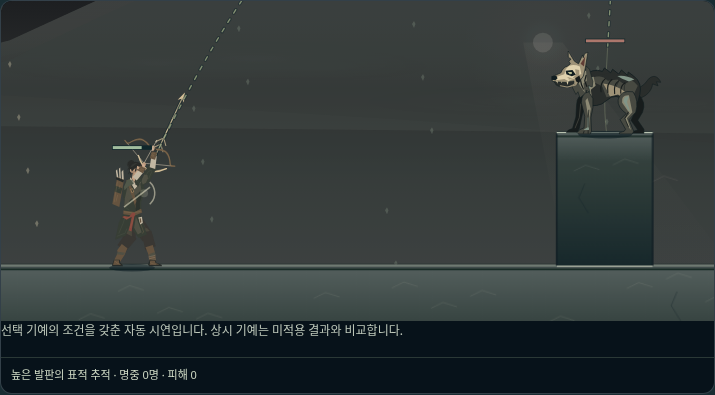
a13-homing/A13-r1-1280-start.png 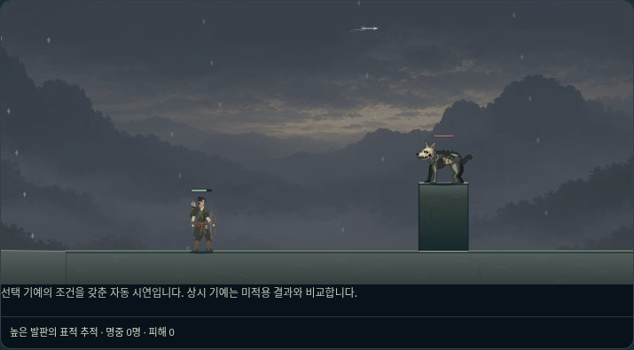
a13-homing/A13-r1-1280-apex.png 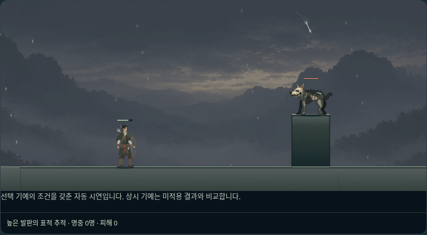
a13-homing/A13-r1-1280-steering.png 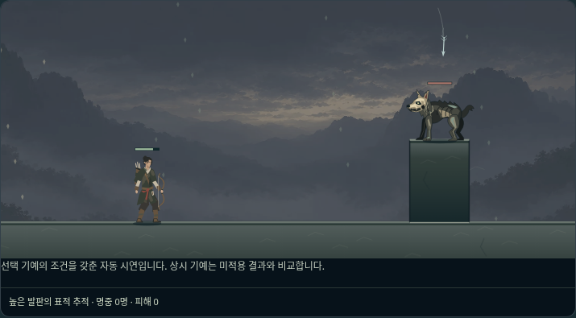
a13-homing/A13-r1-1280-descent.png 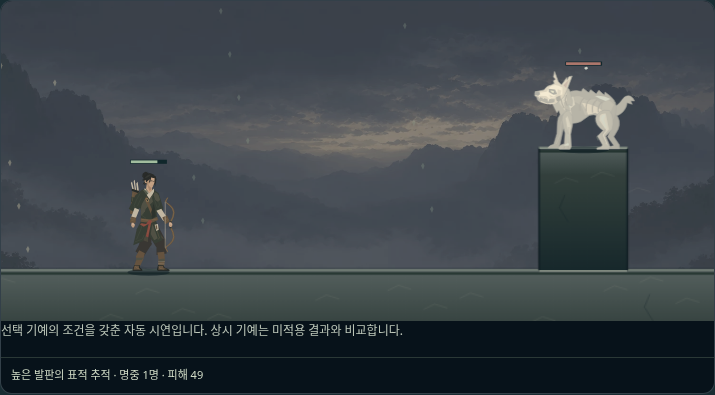
a13-homing/A13-r1-1280-hit.png a13-homing/A13-r1-1280-result.png 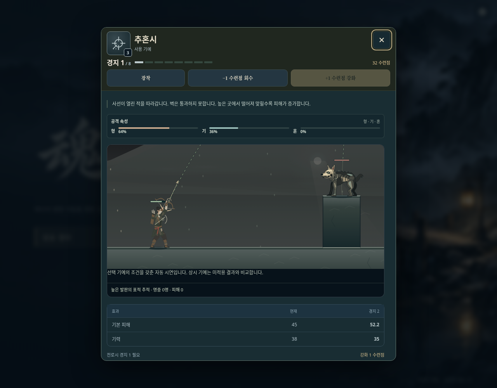
a13-homing/A13-r1-1280-modal.png a13-homing/A13-r1-360-start.png 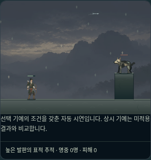
a13-homing/A13-r1-360-apex.png 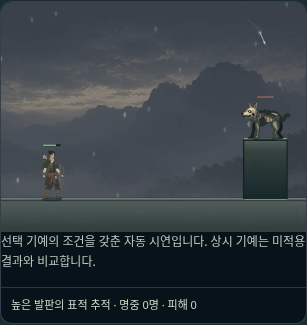
a13-homing/A13-r1-360-steering.png 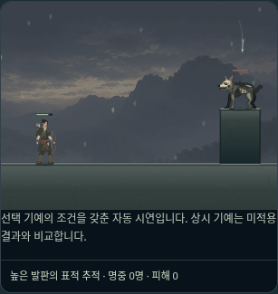
a13-homing/A13-r1-360-descent.png 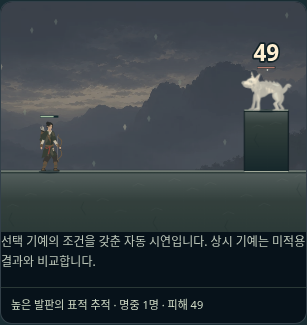
a13-homing/A13-r1-360-hit.png 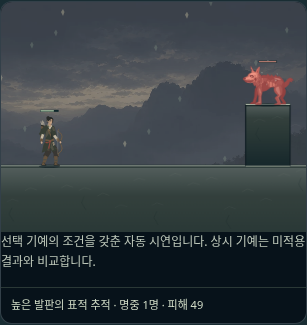
a13-homing/A13-r1-360-result.png 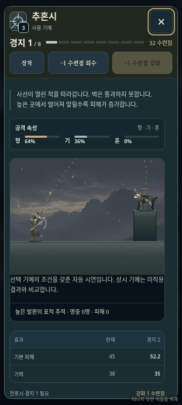
a13-homing/A13-r1-360-modal.png 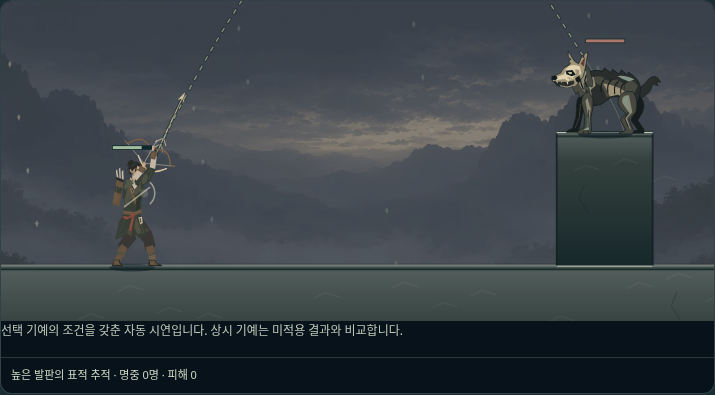
a13-homing/A13-r8-1280-start.png a13-homing/A13-r8-1280-apex.png 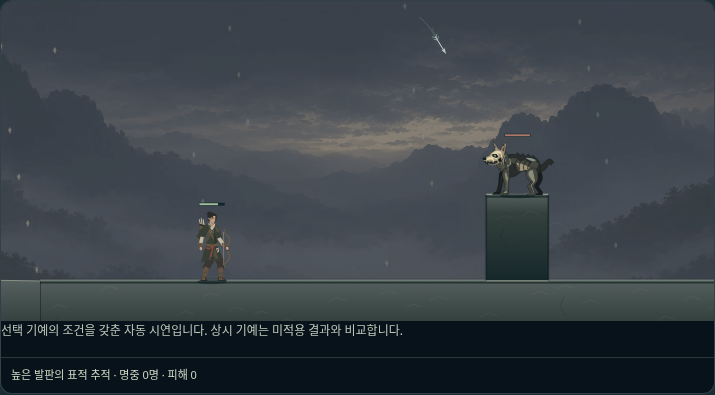
a13-homing/A13-r8-1280-steering.png 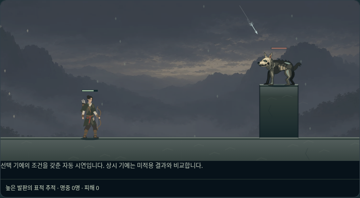
a13-homing/A13-r8-1280-descent.png 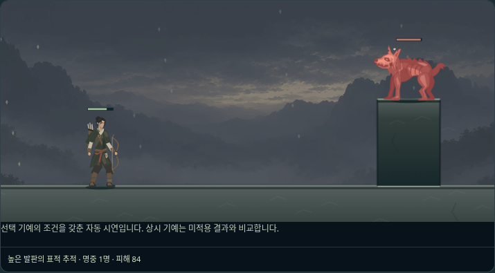
a13-homing/A13-r8-1280-hit.png a13-homing/A13-r8-1280-result.png 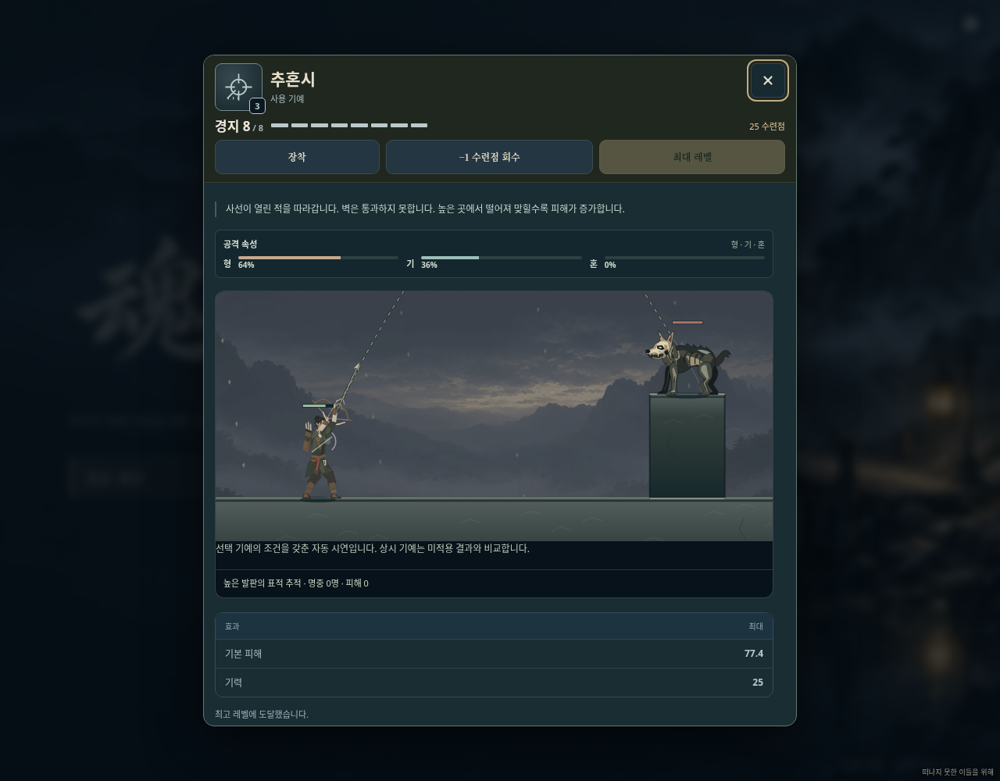
a13-homing/A13-r8-1280-modal.png 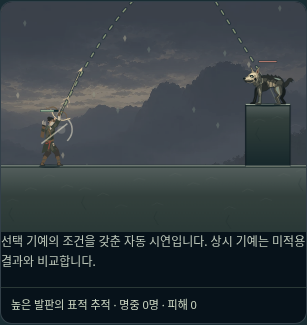
a13-homing/A13-r8-360-start.png 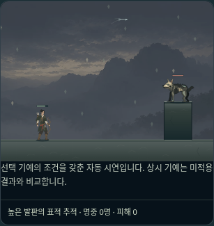
a13-homing/A13-r8-360-apex.png 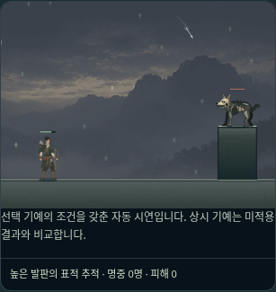
a13-homing/A13-r8-360-steering.png 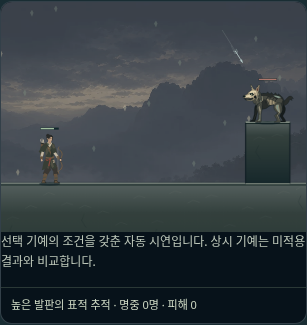
a13-homing/A13-r8-360-descent.png 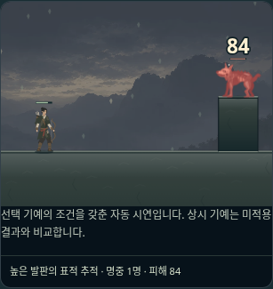
a13-homing/A13-r8-360-hit.png a13-homing/A13-r8-360-result.png 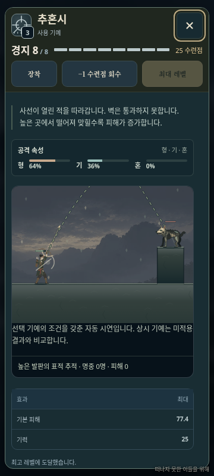
a13-homing/A13-r8-360-modal.png A12 귀환시 · confirmed 가까운 표적 준비 → 외향 화살103 → 귀환 전환과 왼쪽 방향 귀환 화살110/누적213. 귀환 전환 직후에는 여전히 오른쪽을 향함.
audit/A12-start.png audit/A12-core.png audit/A12-result-1280.png archer-focused/A12-1280-outbound.png archer-focused/A12-1280-returning.png audit/A12-result-360.png A15 칠성추혼 · confirmed 고각 발사 → 최고점에서 실제 자식 화살 묶음 → 분산 낙하로 두 표적 명중/후속 세 번째. 첫 분리 프레임은 묶쳐 보이므로 기존 착탄 프레임도 함께 근거로 사용.
audit/A15-start.png audit/A15-core.png audit/A15-result-1280.png archer-focused/A15-1280-split.png audit/A15-result-360.png A05 격퇴시 · confirmed 이격된 지상 표적 → 앞 적 밀림/뒤 적 충돌12 → 세 표적 군집과 추가 피해9.
audit/A05-start.png audit/A05-core.png audit/A05-result-1280.png audit/A05-result-360.png A04 산개사 · confirmed 실제 박쥐 세 고도 → 부채꼴 다발과 두 비행 표적 명중 → 세 번째까지 피해. 지상 늑대를 공중 배치하지 않음.
audit/A04-start.png audit/A04-core.png audit/A04-result-1280.png audit/A04-result-360.png A07 쇄암시 · confirmed 발사 전 목재벽 → 목재 파괴·뒤 표적 명중52 → 목재 없음 유지.
audit/A07-start.png audit/A07-core.png audit/A07-result-1280.png audit/A07-result-360.png A03 연환시 · confirmed 가까이 늘어선 접지 표적 → 102/73 연쇄 명중 → 세 표적 누적 피해228. 단일 정지화면만으로 이동 궤적 전체를 증명하지 않음.
audit/A03-start.png audit/A03-core.png audit/A03-result-1280.png audit/A03-result-360.png A08 철화 · confirmed 일반 비행 준비 → 첫 착탄180 → 파편 화살과 추가 피해274.
audit/A08-start.png audit/A08-core.png audit/A08-result-1280.png audit/A08-result-360.png AP04 궁세 · confirmed 먼 표적 → 같은 조건 미적용234/적용305 표시와 명중 → 차이 유지. 비교값은 별도 무학습 실엔진 결과, 대조 장면은 동시에 그리지 않음.
audit/AP04-start.png audit/AP04-core.png audit/AP04-result-1280.png audit/AP04-result-360.png AP02 급소 간파 · confirmed 실제 치명 확률11→43%, 배율1.98→2.62 → 치명672 → 체력 감소. 수치 비교는 같은 무학습 엔진의 계산 결과.
audit/AP02-start.png audit/AP02-core.png audit/AP02-result-1280.png audit/AP02-result-360.png AP01 연속 시위 · confirmed 한 발 전 후속0 → 첫 피해와 다음 화살 → 실제 후속4발/추가 피해.
audit/AP01-start.png audit/AP01-core.png audit/AP01-result-1280.png audit/AP01-result-360.png AP03 이탈보 · confirmed 사격 전 후퇴0 → 왼쪽 화살 상태 아이콘과 후퇴6.33 → 실제 위치가 왼쪽으로 크게 이동/후퇴335.
audit/AP03-start.png audit/AP03-core.png audit/AP03-result-1280.png audit/AP03-result-360.png AP05 살흔 · confirmed 첫 사격 준비 → 다음 내 턴에 같은 적228 추가 피해 → 미적용362/적용456. 턴 번호 자체는 캡처에 표시되지 않아 전후 실행 스냅샷과 함께 해석.
audit/AP05-start.png audit/AP05-core.png audit/AP05-result-1280.png audit/AP05-result-360.png S03 횡참 · confirmed 넓은 전방 예측 → 큰 부채꼴 베기/두 적125 → 체력 감소.
audit/S03-start.png audit/S03-core.png audit/S03-result-1280.png audit/S03-result-360.png S05 회신참 · confirmed 앞뒤 지상 적 → 좌우 베기 호와 양쪽79 피해 → 양쪽 체력 감소.
audit/S05-start.png audit/S05-core.png audit/S05-result-1280.png audit/S05-result-360.png S07 연참 · confirmed 체력이 낮은 세 접지 적 → 앞 둘 연속 처치/흩어짐 → 두 시체 소실과 세 번째 생존. 모든 적 처치를 보장하는 시연이 아님.
audit/S07-start.png audit/S07-core.png audit/S07-result-1280.png audit/S07-result-360.png S08 응수세 · confirmed 체력900 준비 → 실제 회복 후 피격12/방어막/반격65·남은954 → 방어 소비 후 유지. 관찰줄로 회복과 반격을 명확화.
audit/S08-start.png audit/S08-core.png audit/S08-result-1280.png audit/S08-result-360.png 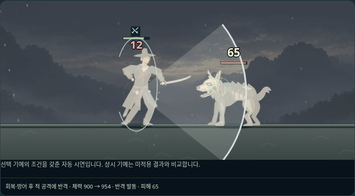
sword-focused/S08-1280-core.png 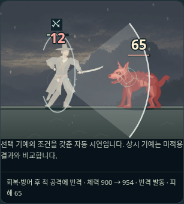
sword-focused/S08-360-core.png S02 사생참 · confirmed 시작 체력900 → 실제 체력600 소비와 큰 일격620 → 소비 상태 유지.
audit/S02-start.png audit/S02-core.png audit/S02-result-1280.png audit/S02-result-360.png 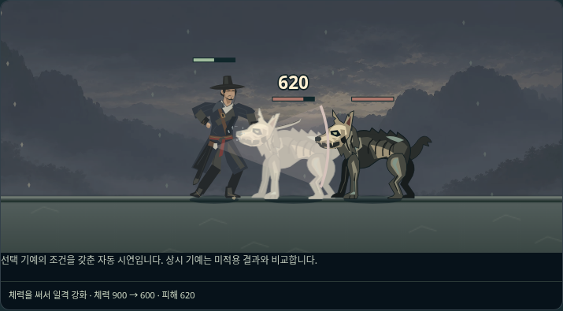
sword-focused/S02-1280-core.png 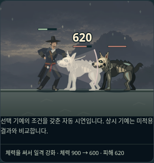
sword-focused/S02-360-core.png S01 도약참 · confirmed 멀리 있는 적을 향한 돌격 → 공중으로 전진하며102 → 가까운 위치 착지.
audit/S01-start.png audit/S01-core.png audit/S01-result-1280.png audit/S01-result-360.png S06 회풍참 · confirmed 군집 위로 높은 돌격 → 비행 중 두 적80 연속 베기 → 적 사이 착지.
audit/S06-start.png audit/S06-core.png audit/S06-result-1280.png audit/S06-result-360.png S04 파산격 · confirmed 높은 비행 준비 → 실제 추가 입력 급강하 순간(별도) → 착지 두 적146/85 피해. 재입력 직후 작은 캐릭터와 낙하 흔적을 확인하며 고각 카메라에서는 작게 보임.
audit/S04-start.png audit/S04-core.png audit/S04-result-1280.png audit/S04-result-360.png 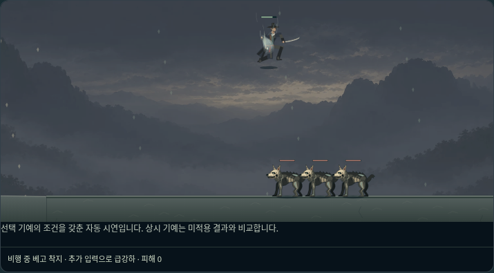
sword-focused/S04-1280-dive.png 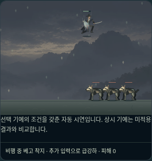
sword-focused/S04-360-dive.png S15 쇄진돌격 · confirmed 접지 늑대와 실제 박쥐 → 몸체 이동 중 지상 적 운반/두 종류93·96 피해 → 접지 늑대 위치 이동, 박쥐는 공중 유지.
audit/S15-start.png audit/S15-core.png audit/S15-result-1280.png audit/S15-result-360.png S13 파진연격 · confirmed 돌격 준비 → 착지136 피해 → 실제 후속 평참으로 두 적56씩/누적248. 후속 명중 프레임 추가.
audit/S13-start.png audit/S13-core.png audit/S13-result-1280.png audit/S13-result-360.png 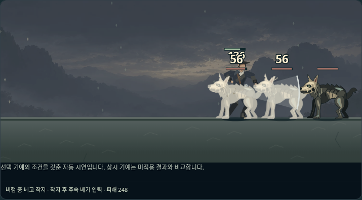
sword-focused/S13-1280-followup.png 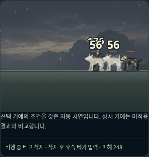
sword-focused/S13-360-followup.png S09 월영참 · confirmed 원거리 준비 → 실제 독립된 초승달 검기 비행(추가) → 원거리 첫 적82 피해.
audit/S09-start.png audit/S09-core.png audit/S09-result-1280.png audit/S09-result-360.png 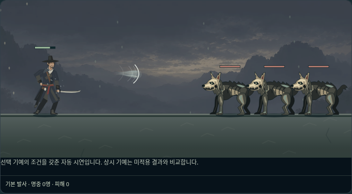
sword-focused/S09-1280-flight.png 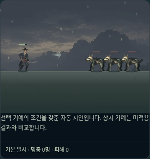
sword-focused/S09-360-flight.png S10 견인참 · confirmed 먼 적 → 실제 왼쪽으로 끌린 적과114 피해/수평 연결선 → 적이 시전자 바로 앞에 남음.
audit/S10-start.png audit/S10-core.png audit/S10-result-1280.png audit/S10-result-360.png S11 관통참 · confirmed 일렬 다섯 적 → 앞 둘81 관통/검기 모양 → 다섯 적 모두81/405. 밀집 숫자는 360px에서 겹침.
audit/S11-start.png audit/S11-core.png audit/S11-result-1280.png audit/S11-result-360.png S14 파열참 · confirmed 밀집 표적 → 실제 충돌점에 길게 선 검압과 두 적89 피해 → 체력 감소. 검압은 조준의 법선으로 비스듬히 보이며 화면 수직선은 아님.
audit/S14-start.png audit/S14-core.png audit/S14-result-1280.png audit/S14-result-360.png S12 회륜검기 · confirmed 기본 검기 준비 → 실제 여러 공전 칼날과 첫 적248 → 연속 명중으로 세 적1351. 도는 동작 전체는 정지 캡처에서 추론하지 않고 실엔진 orbit 스냅샷으로 보조.
audit/S12-start.png audit/S12-core.png audit/S12-result-1280.png audit/S12-result-360.png SP01 검세 · confirmed 충전된 전방 베기 준비 → 실제 큰 베기·두 적410 → 대조 누적648/적용820. 사거리 차이는 별도 대조 화면을 겹쳐 그리지 않아 수치/엔진 계약을 보조로 사용.
audit/SP01-start.png audit/SP01-core.png audit/SP01-result-1280.png audit/SP01-result-360.png SP02 단련 · confirmed 최대HP1330→1696/남은998→1272 → 같은 실제 적 공격109 → 대조853/적용1163. 체력 최대량과 피격 차이를 전후 확인.
audit/SP02-start.png audit/SP02-core.png audit/SP02-result-1280.png audit/SP02-result-360.png SP03 경신 · confirmed 실제 점프 중인 시작 화면 → 착지 → 비교 높이213.62/287.62·소모 이동75/35. 캡처가 뛰기 전이 아니라 도약 중임을 명시.
audit/SP03-start.png audit/SP03-core.png audit/SP03-result-1280.png audit/SP03-result-360.png SP04 연세 · confirmed 검술 준비 → 실제 반복 검술·돌격·검기 이후 합세 문자와 강화 베기486 → 대조1123/적용1285. 중간 각 시전은 기록된 casts로 보조.
audit/SP04-start.png audit/SP04-core.png audit/SP04-result-1280.png audit/SP04-result-360.png SP05 불굴 · confirmed HP15의 도사 없는 단독 검객 → 실제 치명적 피격617과 불굴/방어 아이콘 → 대조0/적용851 생존. 실전 조건의 불굴 엔진 판정이며 HP를 결과로 강제 설정하지 않음.
audit/SP05-start.png audit/SP05-core.png audit/SP05-result-1280.png audit/SP05-result-360.png O02 투과령 · confirmed 벽을 가로지르는 조준 → 실제 벽 통과와 첫 적 관통30 → 후속 폭발로 두 적75/20 누적95. 폭발 캡처 추가. 충전별 지연 비교는 별도 미시연.
audit/O02-start.png audit/O02-core.png audit/O02-result-1280.png audit/O02-result-360.png 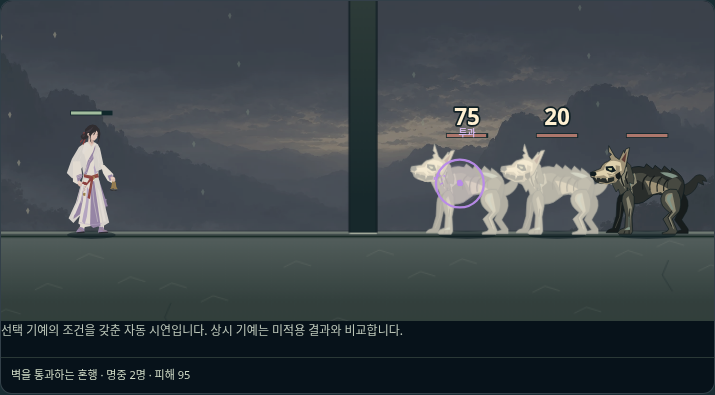
occult-focused/O02-1280-explosion.png 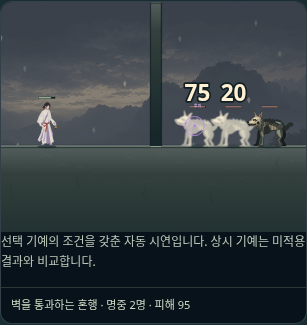
occult-focused/O02-360-explosion.png O03 역천령 · confirmed 거꾸로 솟는 예측선 → 위에서 갈라진 여러 원혼비/두 적 명중 → 세 적43/54/21.
audit/O03-start.png audit/O03-core.png audit/O03-result-1280.png audit/O03-result-360.png O04 황천창 · confirmed 벽 전방 준비 → 실제 벽 뒤로 나온 창과 연결 궤적(추가) → 첫 적112 피해/다음 적 무피해.
audit/O04-start.png audit/O04-core.png audit/O04-result-1280.png audit/O04-result-360.png 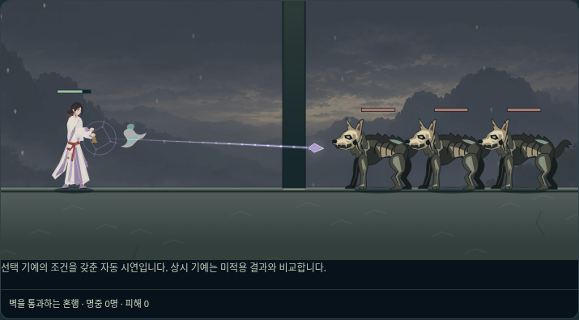
occult-focused/O04-1280-through-wall.png 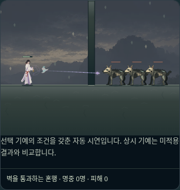
occult-focused/O04-360-through-wall.png O05 회귀망령 · confirmed 출발·지상 표적 → 두 적 외향 관통31·31 후 벽에서 정지/왼쪽으로 되돌아오는 망령(추가) → 실제 귀환 폭발88·148. 곡선 복귀 전체는 정지 연속 프레임과 실엔진 returning 상태를 함께 확인.
audit/O05-start.png audit/O05-core.png audit/O05-result-1280.png audit/O05-result-360.png 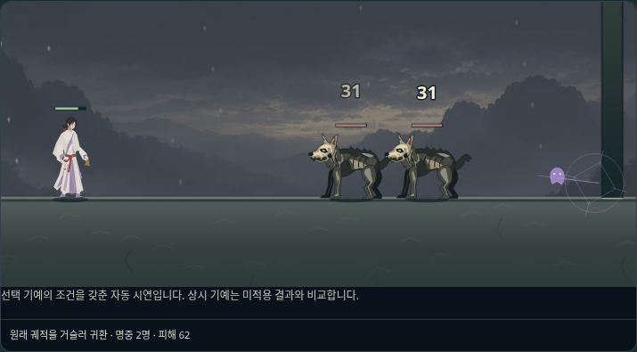
occult-focused/O05-1280-returning.png 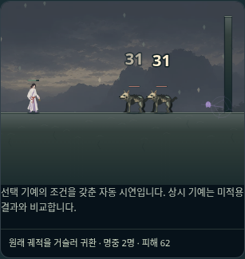
occult-focused/O05-360-returning.png 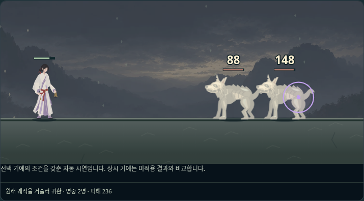
occult-focused/O05-1280-return-hit.png O16 만혼귀결 · confirmed 선택한 기예만으로 밀집 접지 표적 준비 → 실제 혼령14개가 흩어졌다 귀결점으로 모이는 궤적/두 적 명중 → 누적1095. 기존 선행 반향령은 경로·시야를 혼란시켜 제거했고, 실제 e.bestShot 계열 조준을 사용. 밀집 숫자는 겹침, 아래 지형으로 흐르는 혼령은 실제 all-phase 발사체.
audit/O16-start.png audit/O16-core.png audit/O16-result-1280.png audit/O16-result-360.png 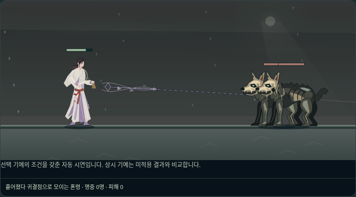
occult-focused/O16-1280-start.png 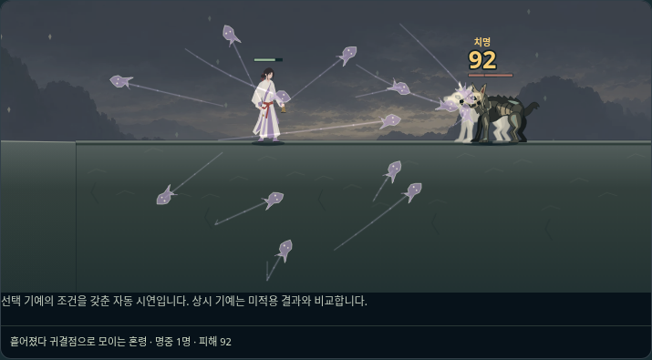
occult-focused/O16-1280-converging.png 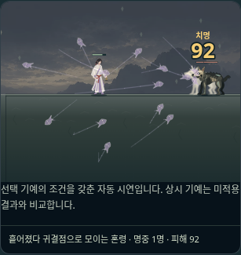
occult-focused/O16-360-converging.png 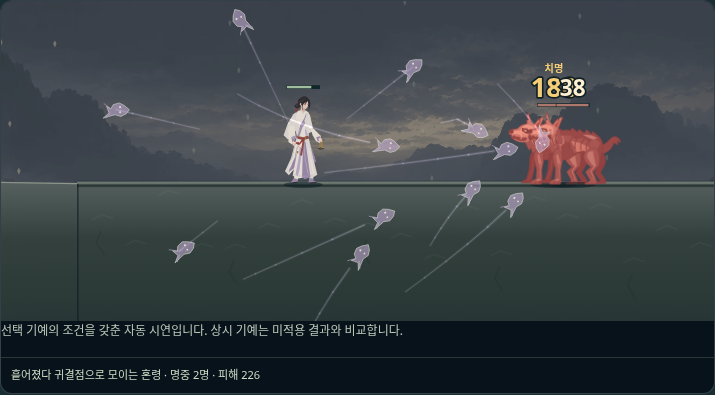
occult-focused/O16-1280-core.png 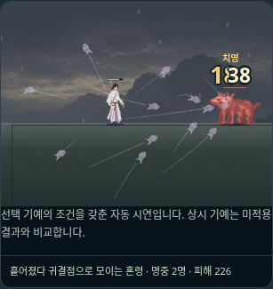
occult-focused/O16-360-core.png 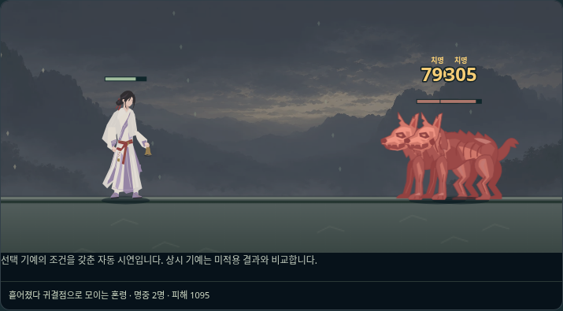
occult-focused/O16-1280-result.png O06 쇠망부 · confirmed 방어가 있는 지상 적 → 실제 부적 명중/공격 위력67.04→59·방어35→22%/7턴 → 쇠약 아이콘 유지. 시연 표적의 방어만 .35 설정하여 실제 방어 감소가 보이게 함.
audit/O06-start.png audit/O06-core.png audit/O06-result-1280.png audit/O06-result-360.png 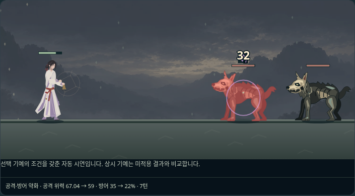
occult-focused/O06-1280-core.png 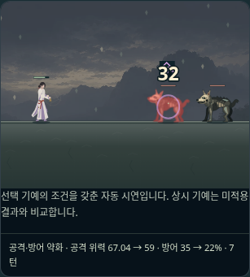
occult-focused/O06-360-core.png O07 증오부 · confirmed 같은 편 두 적 → 저주받은 적에게 뒤 적의 실제 공격/52 등 피해 → 배신·저주 아이콘 유지. 관찰만으로 공격 소유자를 판별하기 어려워 실제 hits.source도 보조 근거로 사용.
audit/O07-start.png audit/O07-core.png audit/O07-result-1280.png audit/O07-result-360.png O08 현형부 · confirmed 소단과 영안 없는 동행/숨은 혼령 → 현형 표식·동행 자동조준 불가→가능 → 현형 지속. 소단은 원래 혼령을 보므로 그림을 강제로 숨기지 않았으며 동행의 실제 e.guidanceTarget 결과로 차이를 표시.
audit/O08-start.png audit/O08-core.png audit/O08-result-1280.png audit/O08-result-360.png 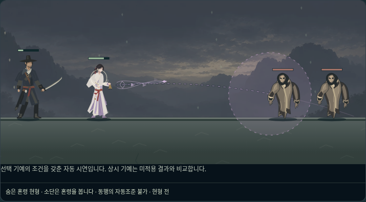
occult-focused/O08-1280-start.png 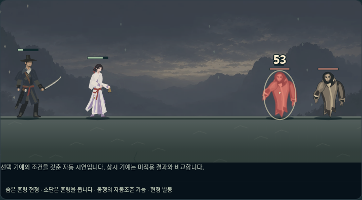
occult-focused/O08-1280-core.png occult-focused/O08-360-core.png O09 섭혼부 · confirmed 적 두 종류 준비 → 첫 적이 녹색 아군 체력바로 전환하여 다른 적을 공격20 → 반격27과 섭혼 지속. 보스/만료횟수 별도 분기 미시연.
audit/O09-start.png audit/O09-core.png audit/O09-result-1280.png audit/O09-result-360.png O10 지박부 · confirmed 부적에 견디도록 실제 위력+8HP인 중립 내성 표적 준비 → 지박주 적용 후 실제 혼령탄 처치 → 같은 자리에 만HP 지박령 생성/유지. 원래 저HP 장면은 부적 폭발 도중 생긴 아군 지박령도 맞는 엔진 동작이 드러났으므로 시연 순서를 수정했다. 전투 로직은 수정하지 않음.
audit/O10-start.png audit/O10-core.png audit/O10-result-1280.png audit/O10-result-360.png occult-focused/O10-1280-start.png occult-focused/O10-1280-core.png occult-focused/O10-360-core.png occult-focused/O10-1280-result.png O11 배회령 · confirmed 적과 떨어진 실제 지면에 배회령 출현(추가) → 본체와 적을 잇는 실제 공격38 → 배회령 유지. 가까운 적 추적은 한 적만 때리는 기존 엔진 행동을 사용.
audit/O11-start.png audit/O11-core.png audit/O11-result-1280.png audit/O11-result-360.png occult-focused/O11-1280-summoned.png occult-focused/O11-360-summoned.png occult-focused/O11-1280-core.png O12 등불귀 · confirmed 실제 떠 있는 등불귀가 적 앞 지면 위치에서 출현 → 추적탄이 등불에서 분리된 비행(추가) → 실제 적74 피해. 비행이 짧아 .03초 구간을 사용, .15초 캡처는 늦어서 실패했음.
audit/O12-start.png audit/O12-core.png audit/O12-result-1280.png audit/O12-result-360.png occult-focused/O12-1280-summon-shot.png occult-focused/O12-360-summon-shot.png O13 호혼령 · confirmed 손상 동행과 소환 준비 → 실제 방호막/HP300→372·기력20→34·방호28 → 회복 지속. 회복 기여 경험치/턴당 1회 제한은 별도 시각 분기 미시연.
audit/O13-start.png audit/O13-core.png audit/O13-result-1280.png audit/O13-result-360.png occult-focused/O13-1280-core.png occult-focused/O13-360-core.png O14 먹귀 · confirmed 지상 늑대 준비 → 먹귀 출현·늑대 소실/포획1 → 실제 먹귀 피격15와 포획 적 전달 피해15. 숨은 포획 적을 따로 그려 결과를 위조하지 않고 실제 HP 감소로 표시. 방출/만료 분기 미시연.
audit/O14-start.png audit/O14-core.png audit/O14-result-1280.png audit/O14-result-360.png occult-focused/O14-1280-core.png occult-focused/O14-360-core.png O15 반향령 · confirmed 반향령 소환 → 시전자와 공중 반향령 각 자리에서 실제 혼령탄 두 발(추가) → 첫 명중19/다음41 누적. 부적/초혼 제외 분기는 별도 미시연.
audit/O15-start.png audit/O15-core.png audit/O15-result-1280.png audit/O15-result-360.png occult-focused/O15-1280-echo-shot.png occult-focused/O15-360-echo-shot.png OP01 잔부 · confirmed 빗나간 부적 → 실제 지면에 잔부4턴 부적 표시(추가) → 적이 밟아113/주박2턴·표시 소실. 실제 renderer에 occultTraps가 전혀 없던 결함을 수정; 픽셀153/72와 실제 발동을 각각 확인.
audit/OP01-start.png audit/OP01-core.png audit/OP01-result-1280.png audit/OP01-result-360.png occult-focused/OP01-1280-trap.png occult-focused/OP01-360-trap.png occult-focused/OP01-1280-core.png occult-focused/OP01-360-core.png occult-focused/OP01-1280-result.png OP02 혼맥 · confirmed 가까운 무주박 적/먼 주박 적 → 중간 배회령이 먼 주박 적에게 실제 공격203 → 적용267→340 피해 비교. 실제 summon 소유 hits와 우선 표적 ID를 보조로 대조.
audit/OP02-start.png audit/OP02-core.png audit/OP02-result-1280.png audit/OP02-result-360.png OP03 분혼 · confirmed 호혼령과 손상 동행 → 적의 실제 공격에서 시전자72 피격·소환령 방호 소모 → 남은HP 대조650/적용703·실제 분담43. 분담 HP/방호 감소만 계측하며 결과를 강제하지 않음.
audit/OP03-start.png audit/OP03-core.png audit/OP03-result-1280.png audit/OP03-result-360.png occult-focused/OP03-1280-core.png occult-focused/OP03-360-core.png OP04 매듭보전 · confirmed 배회령이 실제 출현한 장면(추가) → 자연 만료로 소실 → 실제 expireSummon이 돌려준 기력88·다음 초혼42% 할인. 대조 엔진도 턴 회복하여 나중에 현재MP가 같아질 수 있어 순간 회수량을 계측. 저레벨에서도 발사 가능한 실제 비용+10 기력으로 시작.
audit/OP04-start.png audit/OP04-core.png audit/OP04-result-1280.png audit/OP04-result-360.png occult-focused/OP04-1280-alive-summon.png occult-focused/OP04-1280-core.png occult-focused/OP04-360-core.png occult-focused/OP04-1280-result.png OP05 잔혼 · confirmed 저HP 세 적/생존자 준비 → 실제 세 처치로 잔혼3/3·다음 혼행234 → 대조179/적용309 누적피해. 원래3적 소실과 실제 soulBoost를 같이 확인.
audit/OP05-start.png audit/OP05-core.png audit/OP05-result-1280.png audit/OP05-result-360.png